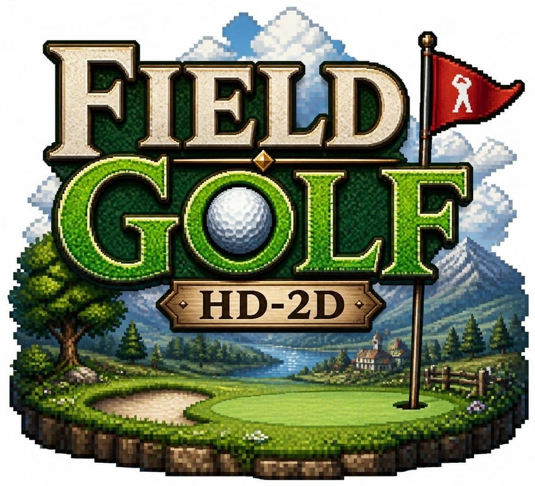

HOLE 1 ・ はじまりの野
Par 4 ／
0
打目 ・ 残り
350
m
SWING
CLUB
⚙ 設定
設定
クラブセット（バッグに入れるクラブ）
クエストで入手したクラブもここで入れ替えられます（試作では全14本を所持）。PT は常に入っています。
ショット後のカメラ演出
「ランダム」はショットごとに抽選します。短いショットでは一部パターンをクォーターに読み替えます。
スイング視点
サウンド
ON
OFF
ホールを最初から
閉じる
SHOT
カップイン！
もう一度回る
スティック：方向 ／ SHOT：押してる間ゲージが往復、離すと打つ

TAP TO START
PROTOTYPE